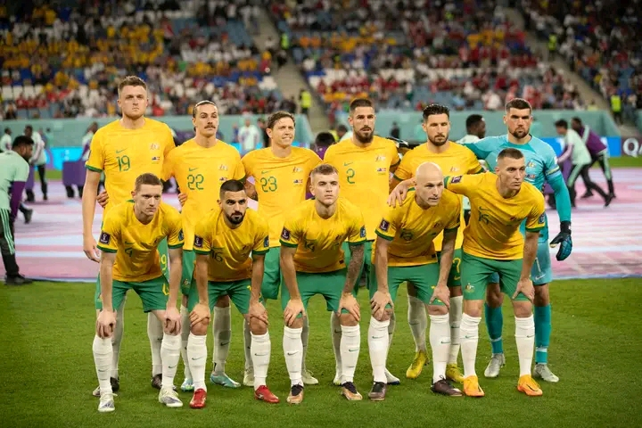
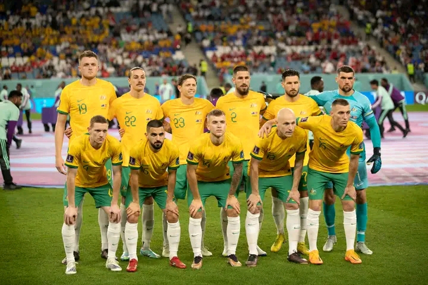

Seleção da Romenia na UEFA Eurocopa
A Seleção Romena vem a Eurocopa para conquistar o primeiro título da história do país, com o bom jogador Dragusin no comando do time.

A Seleção Romena vem a Eurocopa para conquistar o primeiro título da história do país, com o bom jogador Dragusin no comando do time.
